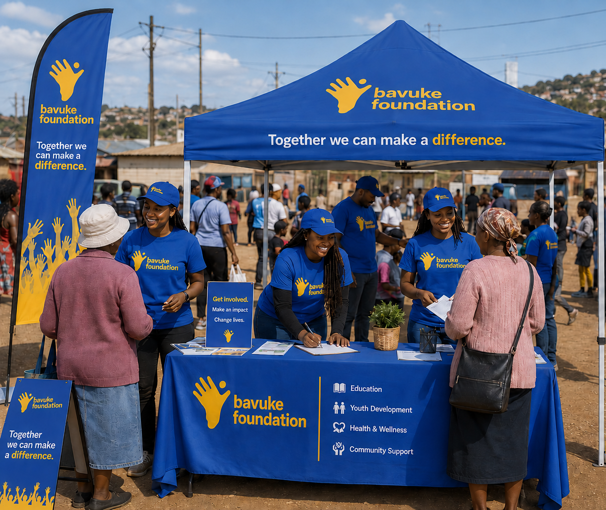

01
EDUCATION
Rise Up Child of Africa
A comprehensive education pipeline supporting beneficiaries from early childhood through to post-secondary opportunities.
Explore Education →
Building healthy, well-educated and financially stable communities through collective action.
"I am because we are."
Rooted in the spirit of Ubuntu, we believe that unity is strength and that collective action can unlock human potential, reduce inequality, and build resilient communities.

Bavuke Foundation is committed to driving sustainable social change by bringing communities, partners and stakeholders together.
We work to uplift and empower individuals and families, creating opportunities for people to rise and achieve their full potential.
Discover Our Story →A comprehensive education pipeline supporting beneficiaries from early childhood through to post-secondary opportunities.
Explore Education →
Promoting holistic wellbeing through integrated health and lifestyle interventions.
Explore Wellbeing →
A flagship volunteer programme encouraging individuals and organisations to contribute time, skills and resources.
Get Involved →
Change happens when education, wellbeing, skills and opportunity come together.
Creating access to learning and development opportunities from early childhood through post-school pathways.
Supporting healthy lifestyles through life skills, sport, nutrition and community health initiatives.
Building capabilities through accredited training, skills development and workplace readiness.
Creating pathways toward financial stability, employment, entrepreneurship and greater independence.
Stronger communities are built when people bring their time, skills, resources and support together.
Give your time to support programmes, communities and people on their journey.
Volunteer With Us →Skills transfer and mentorship can create meaningful opportunities for others to grow.
Share Your Skills →Financial and in-kind contributions help sustain programmes and create opportunities for communities.
Support Bavuke →There is a place for everyone.
Get Involved →When we work together, stronger communities become possible.
Be Part of the Journey →